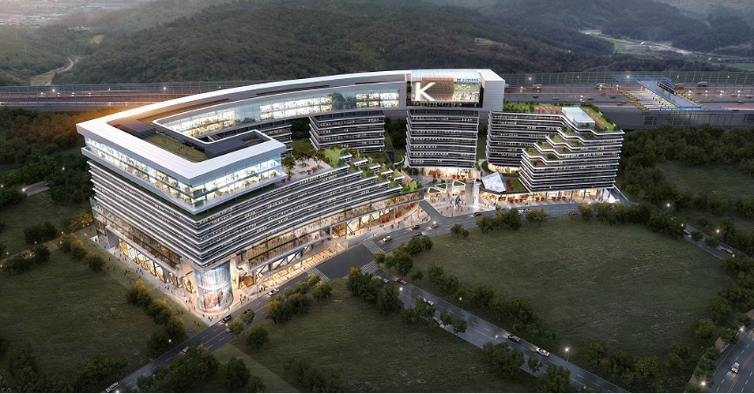
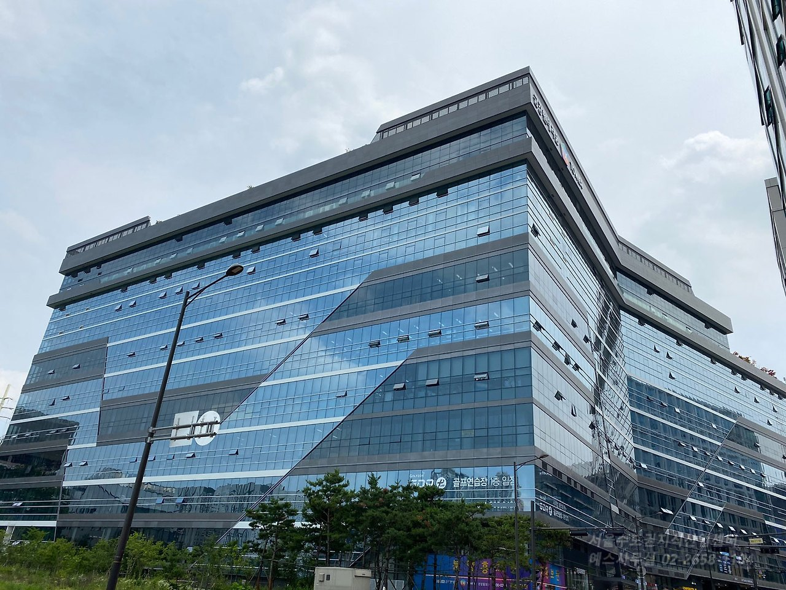
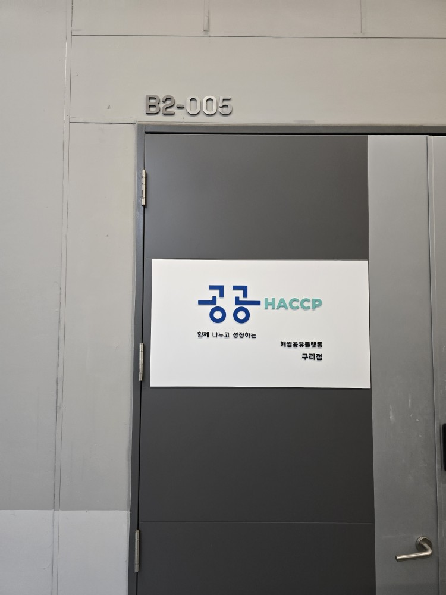
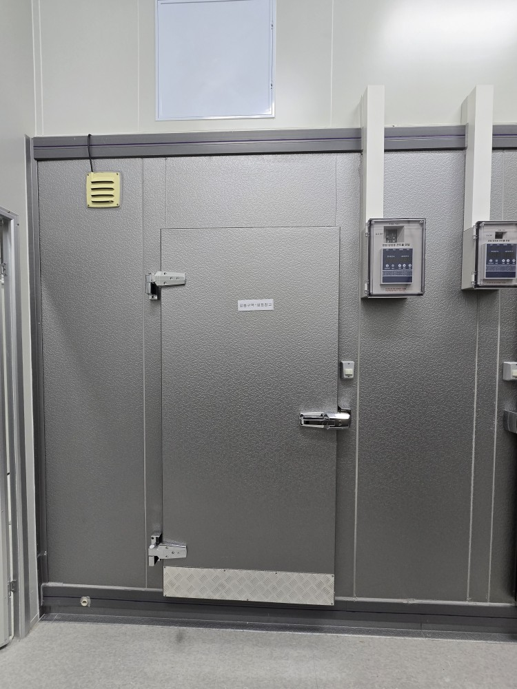
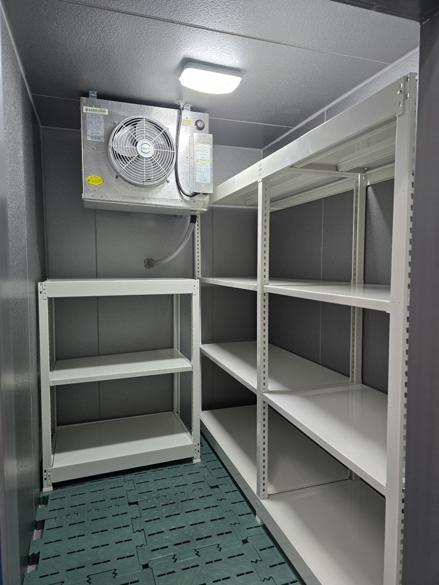
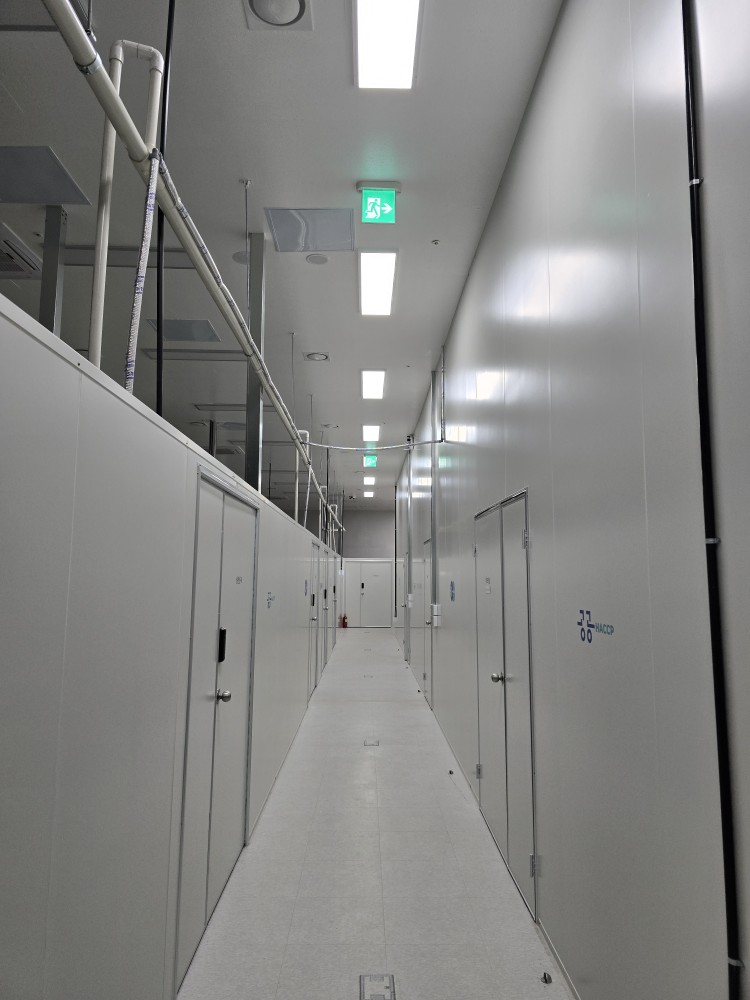
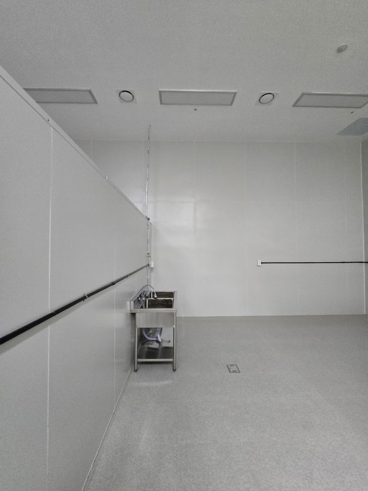

AERIAL VIEW
구리점 조감도
금강펜테리움IX타워 지식산업센터 기준의 전체 배치를 먼저 확인할 수 있습니다.
 POST HACCP
HACCP 인증 준비 및 입점 상담
POST HACCP
HACCP 인증 준비 및 입점 상담
GURI BRANCH
해썹코퍼레이션 구리점은 갈매권역을 기반으로 운영되는 지점으로, 식품 제조 입점 상담과 냉장·냉동 설비 구성을 함께 확인할 수 있습니다. 구리점의 시설 구성과 기본 정보를 한 번에 확인할 수 있습니다.

AERIAL VIEW
금강펜테리움IX타워 지식산업센터 기준의 전체 배치를 먼저 확인할 수 있습니다.

EXTERIOR
실제 접근 시 보이는 외관 이미지로, 갈매권역 내 입지 감각을 함께 볼 수 있습니다.
업체명: 해썹코퍼레이션 (구리점)
주소: 경기도 구리시 갈매순환로166번길 46, 지식산업센터동 지하 2층 4,5,6,7호 (갈매동, 금강펜테리움IX타워 지식산업센터)
전화: 010-3336-0840
이메일: ty0001@naver.com
GURI FACILITY





NEXT STEP
품목, 생산 공정, 인증 필요 여부를 기준으로 구리점에서 어떤 방식으로 시작할 수 있는지 상담을 통해 안내해드립니다.